Pandoc
Pandoc
Mkdocs 중 문서 중 Markdown으로 된 문서를 쉽게 DOCX / PPTX 혹은 다양한 포맷으로 변경가능한 Tool이며,
아래의 설명과 같이 다양한 기능을 제공을 해준다.
NOTE
Markdown을 쉽게 변경을 가능하지만, Mermaid 나 UML 미지원
Pandoc를 이용하여 문서를 만들고자 하면 각 Mermaid 나 UML는 우선 SVG or PNG 그림파일로 변경
Install pandoc
현재 Window에서만 사용을 주로해서 아래와 같이 Window에서 쉽게 설치
Windows
-
Install pandoc in Windows
winget install --id JohnMacFarlane.Pandoc -e -
Check pandoc
pandoc --version
Markdown to Docx/PPTx 변경
- 쉽게 Docx 와 PPTx 변경
- DOCX/PPTX 은 XML 기반이므로 가능하지만, 뒤에 X가 빠지면 안됨
Make Reference
Reference docx 와 pptx 파일생성 방법이지만, 솔직히 Reference 파일은 필요 없을 듯하다.
- Reference docx/pptx file
pandoc -o reference.docx --print-default-data-file reference.docxpandoc -o reference.pptx --print-default-data-file reference.pptx
- Reference File
- 상위 파일을 만든 후, 각 폰트를 변경하고 본인 스타일로 수정
- docx 와 pptx 가능한 이유는 XML기반
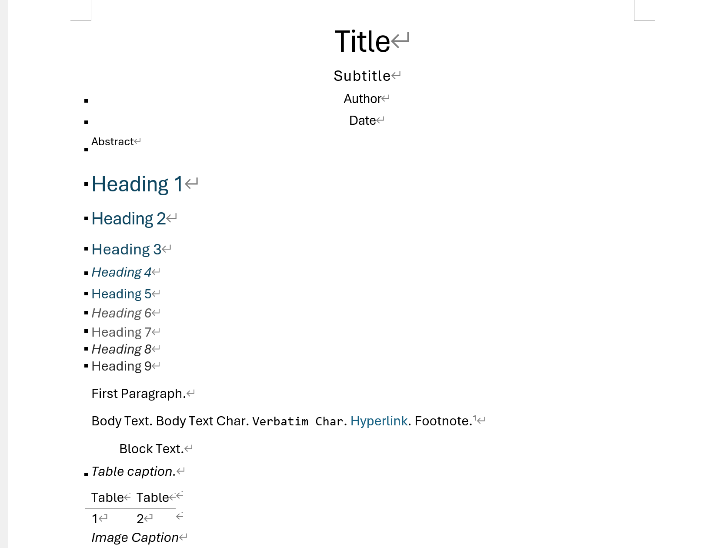
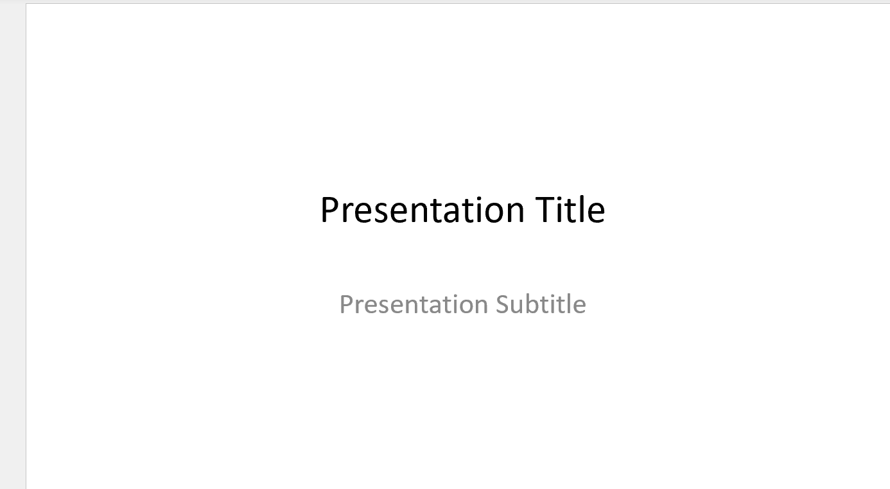
Modify Reference
Reference 파일을 한번에 완성하기는 힘들면, 아래와 같이 반복 진행하며, 상위처럼 Reference 파일 만들기 보다
기존에 본인이 사용하는 것을 Reference 파일을 이용하는 게 더 빠름
가능하다면, 기존파일을 아무거나 사용하고 싶은 것을 가져와서 Reference하는 게 더 좋음
- STEP.1 : Convert to DOCX 파일 생성 (reference 이용)
- STEP.2 : 상위 Output의 tool_pandoc.docx 파일을 수정
- Ctrl+Alt+Shift+S : 스타일 수정 나옴 (각 스타일 서식구조를 변경)
- 각 원하는 서식에서 우측버튼 -> 스타일 -> 원하는 스타일 선택 -> 스타일 적용
Modify Style
Pandoc에서 사용하는 스타일 서식을 본인 스타일의 서식으로 변경
- docx 파일 스타일 수정
- 스타일에서 각 pandoc의 스타일 이름 찾기
- e.g. 제목2, 제목3, Compact, Source Code, Table
- 스타일에서 각 pandoc의 스타일 이름 찾기
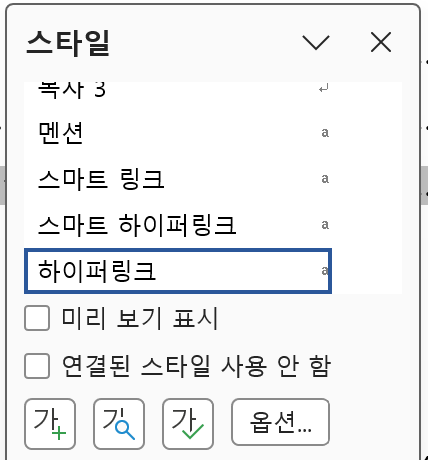
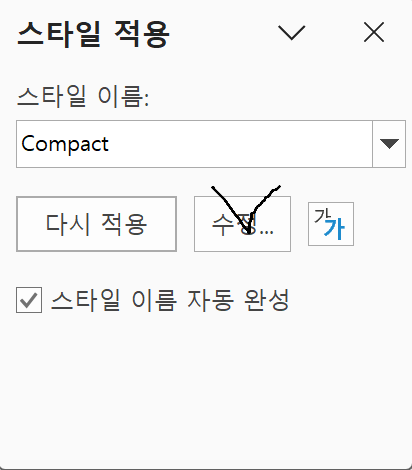
-
스타일 수정 -> TOC 제목
- 스타일 이름: TOC 제목
- 서식 : 한글 -> 모든언어
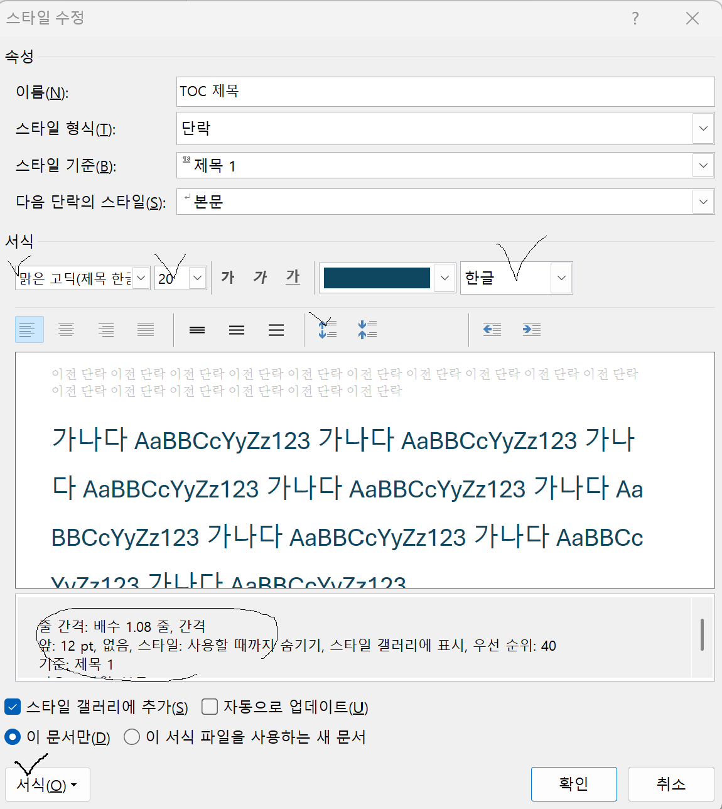
-
스타일 수정->Source Code
- 스타일 이름: Source Code
- 서식 : 한글 -> 모든언어
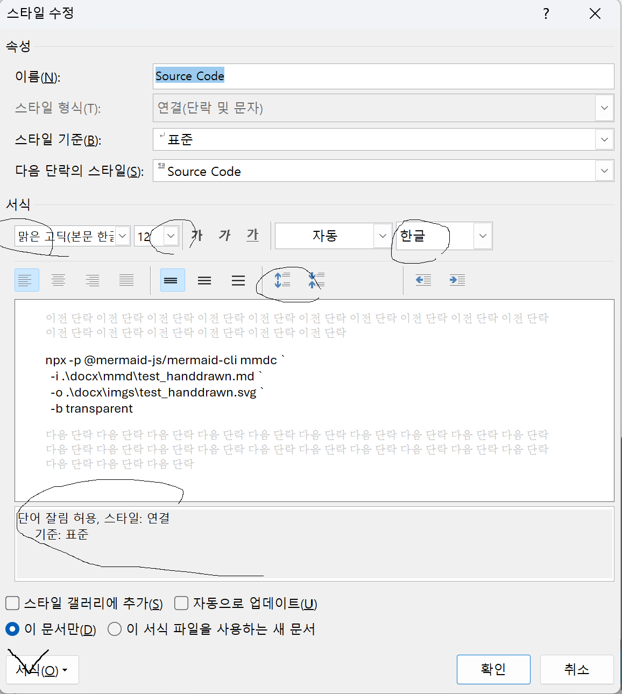
Modify Matrix
- 테이블디자인 -> 표스타일
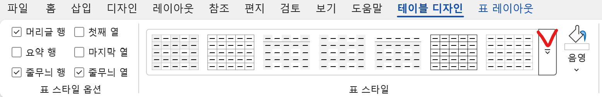
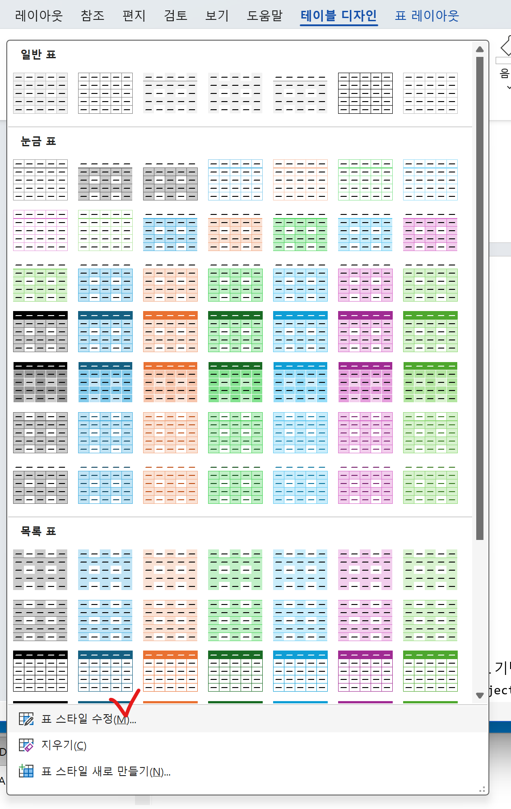
아래에서 최종 표스타일 수정
-
스타일 수정-Table-표전체
- 스타일이름: Table : 이 이름을 찾아서 매번 스타일 서식을 변경하는 것이 목적
- 스타일기준: 외부에 이미 설정된 스타일을 가져오는 것으로 수정중이라면 변경하지 않는 것이 좋음
- 서식 : 한글 -> 모든언어
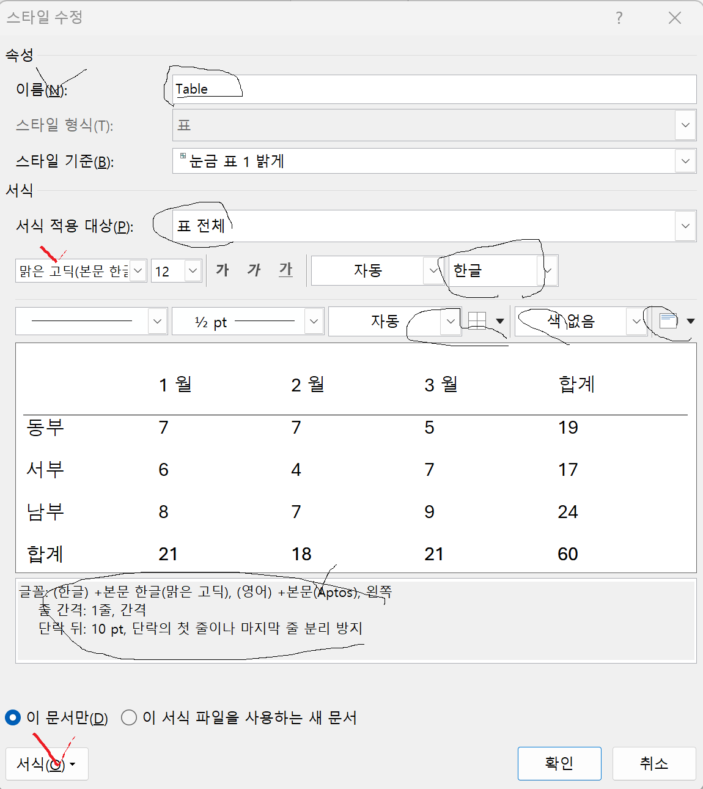
-
스타일 수정-Table-머리글행
- 스타일이름: Table
- 서식 적용대상: 표전체 -> 머리글행
- 서식 : 한글 -> 모든언어
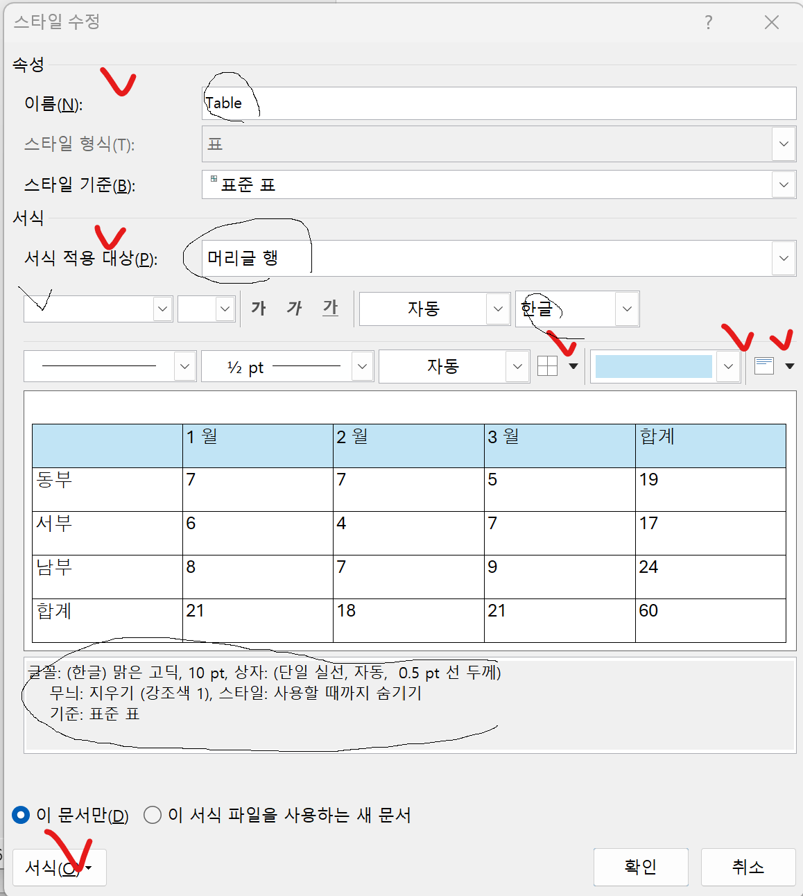
| TEST | TEST | TEST |
|---|---|---|
| TEST | TEST | TEST |
| TEST | TEST | TEST |
| TEST | TEST | TEST |
| TEST | TEST | TEST |
Modify TOC
-
목차-> 사용자지정목차
- 우측 목차1 ~ 8 의 크기 및 폰트 수정
- 수준표시 와 표시방법
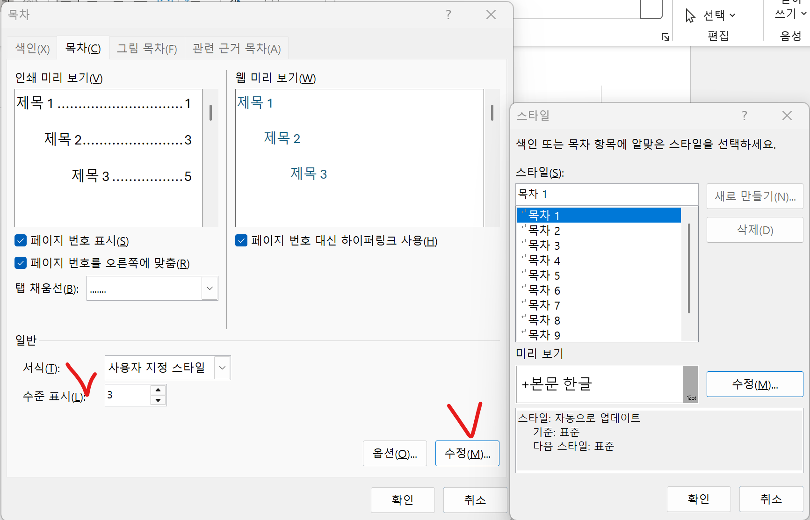
-
TOC 제목
Table of Contents 수정
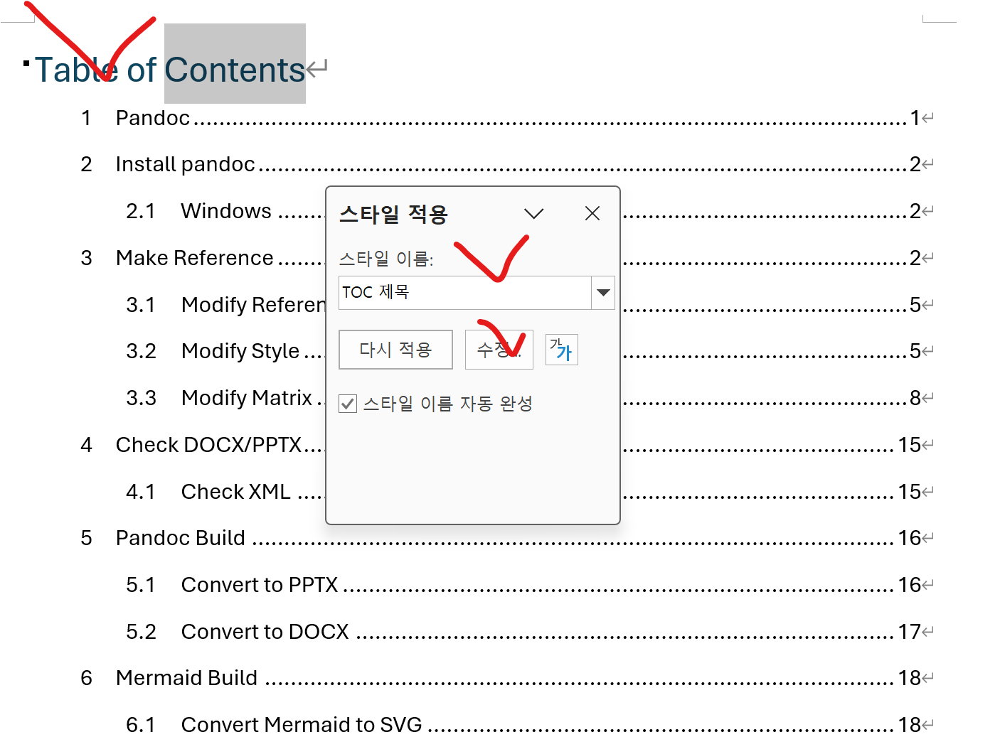
Check DOCX/PPTX
- DOCX/PPTX 의 구성
zip으로 되어있으며, 이를 풀면 XML 기반으로 쉽게 확인가능
tar -tf .\reference.docx | Select-Object -First 10
tar -tf .\reference.docx
[Content_Types].xml
_rels/.rels
docProps/app.xml
docProps/core.xml
docProps/custom.xml
word/document.xml
word/fontTable.xml
word/footnotes.xml
word/comments.xml
word/numbering.xml
Check XML
XML기반으로 세부분석
- styles.xml 내용확인
tar -xf .\reference.docx -O word/styles.xml
- 압축풀기
압축을 풀면 다양한 XML과 Directory가 나옴tar -xf .\reference.docx
Pandoc Build
Convert to PPTX
- Convert markdown to pptx
간단히 변경가능하지만, 사용의미가 없음
pandoc .\docs\index.md ` --slide-level=2 ` --resource-path=".;.\docs" ` -o .\output\index.pptx
- Convert markdown to pptx
Reference 이용
pandoc .\docs\index.md ` --slide-level=2 ` --reference-doc=.\docx\reference.pptx ` --resource-path=".;.\docs" ` -o .\output\index.pptx
Convert to DOCX
- Convert markdown to docx
pandoc ` .\docs\index.md ` --toc ` --number-sections ` --reference-doc=.\docx\reference.docx ` --resource-path=".;.\docs" ` -o .\output\index.docx
- Convert markdown to docx
pandoc ` .\docs\tool_pandoc.md ` --toc ` --number-sections ` --reference-doc=.\docx\tool_pandoc.docx ` --resource-path=".;.\docs" ` -o .\output\tool_pandoc.docx
Mermaid Build
Node.js가 설치되어있다면, npx가 존재
- Pandoc
Pandoc is not support mermaid
Pandoc는 Mermaid가 미지원하므로, 이를 SVG를 변경 후 진행
All Pandoc need Converting
npx --help
- Check package.json
주석을 사용하면 안됨
Convert Mermaid to SVG
- Convert Markdown(mmd) to svg
npx -p @mermaid-js/mermaid-cli mmdc `
-i .\docx\mmd\test.md `
-o .\docx\imgs\test.svg `
-b transparent
npx -p @mermaid-js/mermaid-cli mmdc `
-i .\docx\mmd\test_general.md `
-o .\docx\imgs\test_general.svg `
-b transparent
npx -p @mermaid-js/mermaid-cli mmdc `
-i .\docx\mmd\test_handdrawn.md `
-o .\docx\imgs\test_handdrawn.svg `
-b transparent